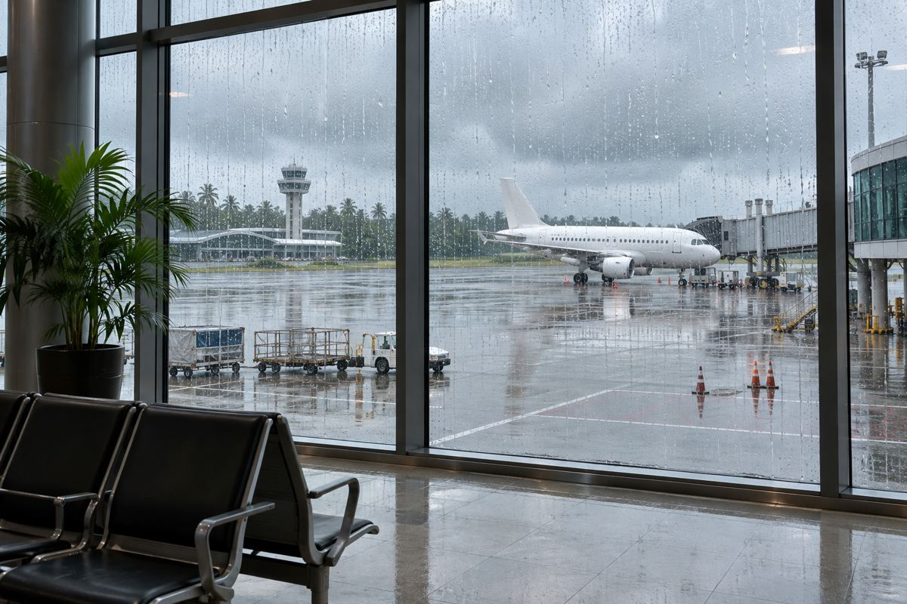

여행·운항 / EXPLAINED
에어아시아, 몬순철 공항 이동 여유 당부…국제선 3시간 전 도착 권고
11월 2일 안내는 연말 혼잡과 도로 사정을 함께 다룬다. 도착 권고 시간과 체크인 마감은 다른 기준이다.

에어아시아가 11월 2일 발표한 연말 여행 안내에서 국제선은 출발 3시간 전, 국내선은 2시간 전에 공항에 도착할 것을 권고했다. 승객 증가뿐 아니라 몬순 기간의 폭우와 도로 혼잡을 함께 고려하라는 내용이다. 항공사는 말레이시아 북동 몬순 예상 기간을 2026년 10월 27일부터 2027년 3월까지로 설명하고, 특히 11~1월의 계속되는 강한 비가 이동에 영향을 줄 수 있다고 밝혔다.
에어아시아는 아시아 여러 시장에서 운항하는 항공사 브랜드다. 이번 자료는 세팡에서 배포된 여행 안내로, 쿠알라룸푸르 국제공항 터미널 2 접근 방법도 포함한다. 이를 전 세계 모든 공항의 법정 절차가 바뀌었다는 공지로 읽어서는 안 된다. 독자가 이용하는 운항사와 출발 공항의 구체적인 조건을 확인하면서 참고해야 하는 안내다.
온라인 체크인이 끝나도 공항 절차는 남는다
항공사는 MOVE 앱이나 웹사이트에서 출발 14일 전부터 1시간 전까지 셀프 체크인을 할 수 있다고 설명했다. 이 시간은 공항에 3시간 또는 2시간 일찍 오라는 권고와 다르다. 셀프 체크인을 했더라도 위탁 수하물 처리, 출국 심사와 보안 검색이 남을 수 있다. 앱에서 탑승권을 받았다는 사실만으로 늦게 공항에 도착해도 된다는 뜻은 아니다.
공식 안내는 출발 24시간 전과 공항으로 출발하기 전에 운항 상태를 다시 확인하라고 권했다. 비가 오는 날에는 도로 침수나 정체 때문에 집에서 터미널까지의 시간이 길어질 수 있다. 항공편이 예정대로 떠나더라도 공항까지 도착하지 못하면 여행은 영향을 받는다. KLIA 터미널 2 이용객에게는 ERL 철도 이용도 제안했지만, 실제 이용 시간과 운행 상황은 출발 전에 따로 확인해야 한다.
휴대전화 번호 하나도 운항 정보의 통로다
예약에 입력한 이메일과 휴대전화 번호를 최신 상태로 유지하라는 내용도 담겼다. 연락처 확인은 출발 직전뿐 아니라 여행 준비 단계에서 해 둘 수 있는 조치다. 운항 차질이 생겼을 때 회사가 보내는 변경 안내와 가능한 셀프서비스 선택지를 받기 위한 조치다. 이번 안내가 특정 날짜의 전면 결항이나 모든 항공권의 무료 변경을 확정한 것은 아니다. 적용 가능한 선택지는 실제 차질과 항공사가 해당 예약에 제공하는 안내에 따라 달라진다.
독자에게 중요한 변화는 이동 계획에 넣어야 할 여유가 비행시간 바깥에도 있다는 점이다. 편집부의 분석으로는 빠듯한 공항 이동과 짧은 별도 발권 연결편을 함께 잡으면 지연이 다음 일정으로 이어질 가능성을 더 고려해야 한다. 다만 이번 자료에는 공항별 지연 확률이나 특정 항공편의 취소 전망이 없다. 몬순이라는 계절 정보를 개별 비행편의 결항 예보로 바꿔 읽어서는 안 된다.
이 안내는 11월 9일 새로 시행되는 일괄 규정이 아니라 11월 2일 발표된 연말 여행 권고다. 출발 당일에는 항공사 운항 상태, 현지 기상 당국의 예보, 공항 접근 교통을 각각 확인하는 편이 유용하다. 온라인 체크인 가능 시간과 공항 도착 권고, 개별 항공편의 실제 마감 절차를 분리해서 확인하면 계절성 안내를 자신의 여행 일정에 더 정확히 적용할 수 있다.